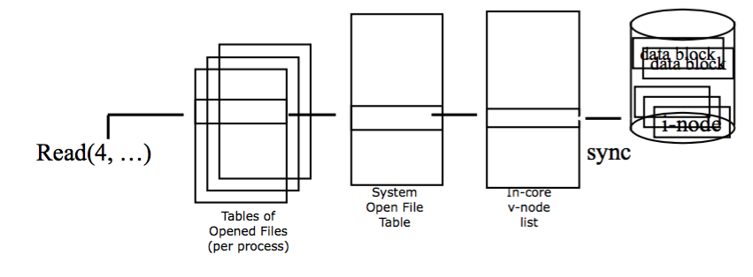

今天要學到「電腦怎麼找到檔案」「開一個檔案時會發生什麼事」「打開檔案之後作業系統要怎麼讀寫？」等等議題。
File System
現在的File System其實是1970年開發出來的檔案系統，不過現在檔案越來越多，所以有點不敷使用中。
Storage Device上會切出很多「data block」(比如說4K)，。同一個檔案的data blocks不一定會放在連續的位置。
基本上所有table都是一個fd ＋ 檔案名 + 指向去哪裡找資料的pointer。
每一個fd會對到一個「可以讀或寫的東西」，至於這些東西是不是同一個隨便！他一點也不關心。這是作業系統才關心的事。 舉例來說，假設某天以要同時讀與寫一個檔案，所以就開了兩次檔的話，在Tables of Open Files裡面，裡面就會有兩條fd，一條說「這是一個用來寫的東西」，另外一條說「這是用來讀的東西」。至於兩個一不一樣他並不關心。 但對作業系統來說，system open table中這兩條fd會對應到同一個id。
I-core會把邏輯位置轉成物理位置，然後把參數丟給磁碟機叫他讀出相對應的檔案。
開完檔案之後，要做讀寫。這時候找檔案的方式就直接用fd來找了，然後一路查下去。
為什麼要多一個System Open File Table ？ 因為可以有「捷徑」，同一個檔案可以有不同通往他的捷徑。對於system Open File Table中，每個這樣的檔案只會有一個id。
開檔之後可以做什麼：
- open, close, read, write, lseek, dub
- fcntl(前面的東西都是用這個東西來實作的，可以說是最基本的。), ioctl
- chmod, chown：改權限的東西(這個應該滿常用的)
- mkdir, cd：應該是滿常用的吧～
File Descripter
每開一個檔案就會給他一個編號。是一個無號整數，大小從0到OPEN_MAX。每一個Process可以開的檔案有最大上限，作業系統能開的檔案數目也養上限。
每個Process一開始跑的時候，作業系統會預設開好3個檔案：
- 0：STDIN_FILENO(在Terminal 打東西)
- 1：STDOUT_FILENO(在Terminal 顯示東西)
- 2：STDOUT_FILENO
- 3號以後都是給其他process用了
在Linux 跟UNIX-Like系統中，所有讀寫裝置都會被當成是檔案，比如說鍵盤就是會一直自動長大的檔案，程式可以讀它。Terminal螢幕就是一個程式可以一直在上面寫東西的檔案。
這3個fd在System Open Table中的同一個東西。剛剛也說過，不同fd可以對應到同一個檔案嘛。
之後如果有程式開檔，就會一直往下編。編號方法以及要怎麼回收已經關掉的檔案會一作業系統有所不同。舉例來說，可以每次都從下面往下找
Open()
int open(const char * pathname, int oflag, .../*mode_t mode*/)
成功的話會回傳檔案的fd，失敗會回傳-1
首先是檔案路徑有上限，不能超過PATH_MAX。檔案名也不能超過NAME_MAX
oflag表示檔案讀寫的模式。在開檔的時後就要決定好了。
O_RDONLY, O_WRONLY, O_RDWD：檔案讀寫權限。因為每個使用者權限不同，所以不能無腦的通通用O_RDWD。只能3選一。
O_APPEND, O_TRUNC：就跟C讀寫檔案的那些參數一樣。
O_EXCL：如果已經有相同檔案名存在的話，那開啟會失敗(不會蓋過去也不會在後面加上)
O_NONBLOCK：函數做完之後才會回傳，所以呼叫他的函數要等它做完，才會繼續做階下來的事，這就是「Blocking」。Non-Blcking就是可以不等函數回傳，先去做自己的事。 Non-Blocking在這裡很重要，因為I/O通常慢，所以如果一直等I/O速度會很慢。
O_DSYNC, O_RSYNC, O_SYNC：在寫檔案的時候要不要同步更新到storage device上面。打開的話會比較安全，因為可以立刻存起來，但是速度會很慢，因為Disk I/O很慢。
要使用的話就把他們OR起來比如：
open(filename, O_WRONLY | O_CREAT | O_TRUNC, mode)：開一個檔，寫他。如果沒有舊創一個新的，如果已經有的話就把東西全部蓋掉。
mode那一個參數跟chown與chmod那個是一樣的。
為什麼要那麼多權限？最明顯的理由是為了安全，不要動到不該動到的東西。在多個Process可能共用個檔案時這件事很重要。跟這個牽扯到的哢外一個議題是file lock。 另外一個理由是效能，這個有點像是硬體中cache有沒有被污染的機制。如果cache被污染，就要考慮要不要寫回硬碟。但是如果知道大家都是Read Only，那根本不用考慮這件事。
開完之後就可以開始讀寫她了～
read() & write()
read()
(自已去查man page)
第一個變數是檔案fd，第二個是要寫進去的資料，第3個是要寫多少bytes。回傳它實際上寫了多少個bytes，正常來說應該要一樣，所以不一樣的話就知道出了一些事(比如說碰到EOF)
還記得fseek()用到的那個檔案位置嗎?read()跟write()會自動更動讀寫位置offset。順帶一提，offset是指「距離檔案頭的位置」，所以通常是正的，但是如果他是負的就表示你在動kernel memory
在檔案讀寫發生在同一個位置時(比如說Terminal)，那讀寫的offset是一樣的。但是如果不一樣，那通常會open()兩次。
write()
去查mam page
大致上一樣，不過要注意如果開檔時是用O_APPEND，那在寫入時就不會移動offset(其實還是會，但是他會寫完時把offset移回一開始的位置)。
存取Storage資料的流程
啊 就塞個buffer，先改buffer，必要時在存給Storage就好了。跟Cache原理一樣。
Kernel會定期檢查buffer，如果buffer有被改過，就會寫回Disk; 如果buffer滿了，那也會立刻把東西塞回disk;關檔時也會把buffer清到Disk。
O_DSYNKC會把Kernel Buffer跟Disk的資料一起改動，但檔案File imformation 不會立刻更新
O_OSYNKC會把Kernel Buffer跟Disk與File imformation一起更新。跟O_DSYNC差在如果程式寫到一半crush，那O_DSYNC會讓File Imformation與實際內容有出入。
雖然不Sync會比較快，但對concurrency資料的一致性會有影響，因為東西可能會存在kernel buffer還沒寫到disk理，另外一個process就要讀的話，他就會讀到就的資料。
那能不能讓要用資料的人自己去sync？可以！O_RSYNC有這個功能。O_RSYNC是「有人要讀的時候，再把kernal buffer更新到disk上」。
這些東西都可以混用，比如說可以O_RSYNC & O_OSYNC。然後OSX會有不一樣的巨集。
Linux不知道哪一個版本之後就把O_DSYNC跟O_OSYNC合併了，因為File Imformation通常遠小於Data內容。
師：「現在中午了，如果你請你同學幫你買便當，他拿了錢就跑，你也不知道是怎麼一回事，這就是blocking; 40分鐘之後你等他拿便當回來了，這就是synchronized。 他跟你說「我買完打電話給你」，這就是non-blocking。那有Asynchronized的例子嗎？」
(安靜)
生：「...有人幫忙買好了？」
師：「對。樓下那台餐車就是Asynchrnized，那就是個buffer。如果你買不到的話(搖指)那裡118巷就是你的storage device。」